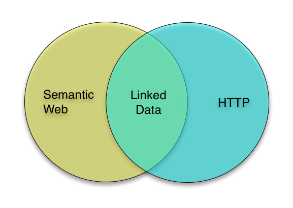
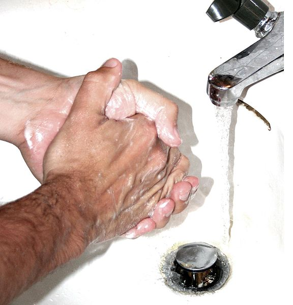

Crafting Linked Data
Sean Gillies
Institute for the Study of the Ancient World, New York University
Overview
- The principles of Linked Data, again.
- How to profit from HTTP.
- The care and feeding of linked data.
Principles of Linked Data
- Use URIs as names for things.
- Use HTTP URIs, so that people can look up those names.
- When someone looks up a URI, provide useful information, using the standards (RDF, SPARQL).
- Include links to other URIs, so that they can discover more things.
Tim Berners-Lee. Linked Data - Design Issues, 2006. http://www.w3.org/DesignIssues/LinkedData.html.
The Sweet Spot?

1. Name things with URIs
A common misunderstanding of URIs is that they are only used to refer to accessible resources. The URI itself only provides identification; access to the resource is neither guaranteed nor implied by the presence of a URI. Instead, any operation associated with a URI reference is defined by the protocol element, data format attribute, or natural language text in which it appears.
RFC 3986 - http://tools.ietf.org/html/rfc3986
1. Name things with URIs (cont'd)
URI references in information retrieval systems are designed to be late-binding: the result of an access is generally determined when it is accessed and may vary over time ... what is being identified is not some specific result that was obtained in the past, but rather some characteristic that is expected to be true for future results.
Even when there is a date in the URI: http://www.nytimes.com/2012/05/31/nyregion/bloomberg-plans-a-ban-on-large-sugared-drinks.html
Generic URI Syntax
URI = scheme ":" hier-part [ "?" query ] [ "#" fragment ]
hier-part = "//" authority path-abempty
/ path-absolute
/ path-rootless
/ path-empty
URI Syntax Examples
foo://example.com:8042/over/there?name=ferret#nose \_/ \______________/\_________/ \_________/ \__/ | | | | | scheme authority path query fragment | _____________________|__ / \ / \ urn:example:animal:ferret:nose
2. Use HTTP URIs
- HTTP is a protocol for interacting with things.
- Is the thing identified by the URI accessible? What is it?
- If it is an HTTP URI, you can find out from any web browser.
- DNS resolution and TCP are ubiquitous.
- http:// means batteries included.
2. Use HTTP URIs (cont'd)
- HTTP provides verbs: GET, PUT, DELETE, POST, &c.
- Authority segment of an HTTP URI provides provenance.
- HTTP URIs can be shared by non-experts.
- Can be used in innovative ways: http://maps.google.com/maps?q=http://pleiades.stoa.org/places/148107/kml
3. Provide Useful Information
- Return RDF to those who ask for it.
- Otherwise return HTML with links to RDF.
- Autodiscovery patterns are useful.
- KML is useful for geographic applications.
- JSON is useful for web and mobile applications.
4. Make Links
- Means of citation.
- Allows people and agents to follow their noses to more things.
- Indicates trust in other projects.
The Goals
By following these principles we aim to produce a web of data not limited by our own personal or institutional resources, and make possible a world of new applications not limited by our own imaginations.
The Goals (cont'd)

Linking Open Data cloud diagram, by Richard Cyganiak and Anja Jentzsch. http://lod-cloud.net/
The Goals (cont'd)
We also aim to increase access to our own data because
- Access can lead to increase in data coverage and quality.
- "Preservation is just access ... in the future." – David Brunton (via Ed Summers)
Speaking of the future...
How do we make sure that our linked data is still useful in 1 year, 5 years, 20 years?
Practicing good URI hygiene is a big part of the answer.
Let's Talk About URI Hygiene

Hygieia, daughter of Asclepius
By I. Sailko, http://en.wikipedia.org/wiki/File:Hygea,_copia_romana_da_originale_greco_del_III_sec._ac.JPG
{kind=link}
Cool URIs Don't Change
- Buffer your things from platform and software changes.
- "things.example.com" is better than "tomcat.example.com".
- Eliminate "/cgi-bin/".
- "/things/1" is better than "/things/1.aspx".
- The less unnecessary hierarchy, the better.
Follow Links in Content
- Follow rel="alternate" links to other formats (XML, JSON, &c).
- Avoid constructing URIs by appending ".xml" or ".json".
- Teach other consumers of your data to follow the links.
Conclusion
- Linked Data has 4 simple principles.
- HTTP and http:// URIs are good for you and your data.
- Lightweight policy and good URI hygiene can prevent many problems.